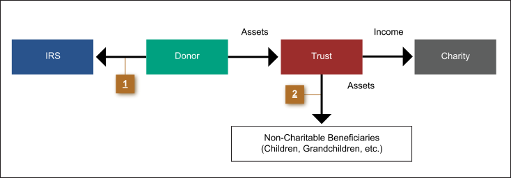

One of the obstacles to creating a charitable remainder trust is that making the charitable gift requires diminishing the estate that would otherwise pass to the donor's heirs. This can often be overcome by combining the Charitable Remainder Trust with an Irrevocable Life Insurance Trust (often called a Wealth Replacement Trust). In this way the donor can accomplish all of the following:
The diagram below illustrates how this works. Part of the diagram is already familiar to you from the earlier presentation of the charitable remainder trust. The only thing new is the introduction of the Irrevocable Life Insurance Trust into the plan. Click each numbered bullet to learn more.
